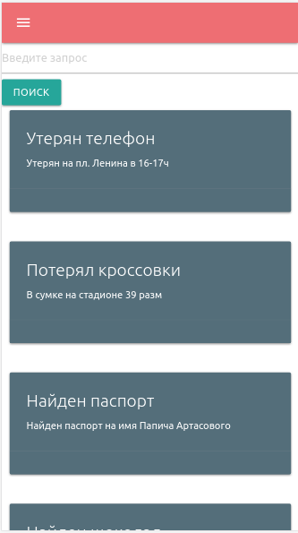
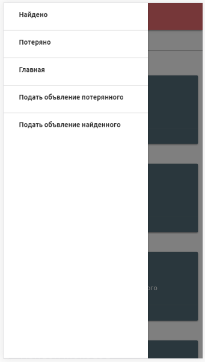

Приложение по поиску потерянных вещей.
 Это приложение было сделано на следующих технологиях: front-end - html,css,js фреймворк Materialize, back-end - php фреймворк Laravel. Запросы на сервер отправлял через ajax, используя фреймворк jQuery. В приложении реализован поиск по нескольким колонкам со вхожденими, добавлением новых записей.
Моя работа на GitHub